00读前一分钟 · 全文脉络（做完题再看也行）
📌 文体：这是一篇新闻稿，不是评论——全文没有作者自己的观点，五个声音轮流开口：researchers have suggested（①）· 乔杜里（②⑥⑦）· 斯瓦内普尔（③）· 期刊论文（④）· 一项旧研究（⑤）。同卷 T1 正好相反：T1 是专栏，作者第一人称亮观点。
📌 结构套路：一条对比线贯穿全文——狩猎采集（多人带一个）vs 西方（一个人带、一人看四个、坐着听讲）。三个对比信号：⑤❶ By contrast · ⑥❷ contrasts starkly to · ⑦❶ While。五道题的正确项全站在狩猎采集那一边，干扰项多从西方那一边取料，或者把对比读反（27D differences、28A alleviates）。
📌 出题顺序：26 ①②、27 ③、28 ④、29 ⑥、30 全文——⑤段和⑦段不单独出题：⑤段是给 28／29 垫数据的对照组，⑦段被 30A、30C 拿去当干扰项原料。
📌 本篇最值钱的一条规律：概念题先拆词，再找回指。alloparenting ＝ allo-（别的）＋ parenting——光拆词就能排掉 26D 的 by their parents；再顺着 these practices 往回找①段的具体做法，答案自己出来。
01原文精读
🟡 黄色高亮 = 重难点词/短语，点击右侧出卡片 ｜ 蓝色虚线 = 长难句，点击跳到精析 ｜ 每段「意」= 段落意译 ｜ 选中任意其他单词浮出「查有道」 ｜ 原文由你的浏览器从原卷识别成文字（首次约 3 秒，之后秒开）；「原卷对照」可逐句看扫描原图、改识别错字
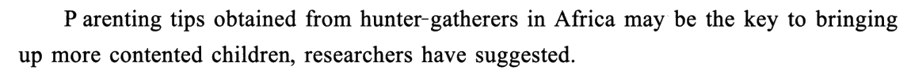
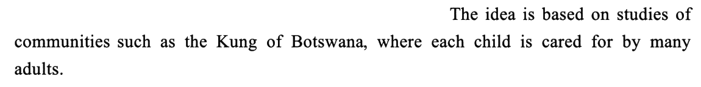
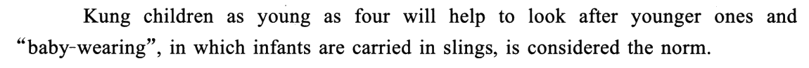
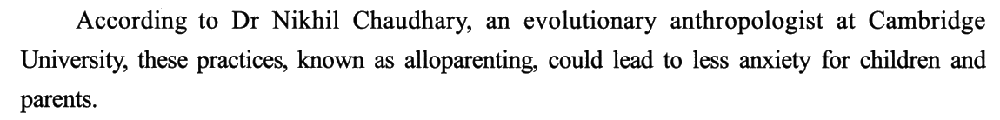
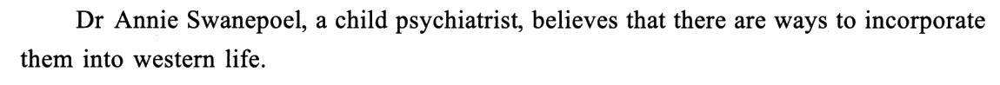
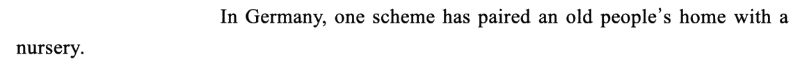
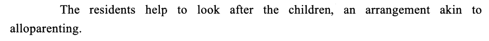
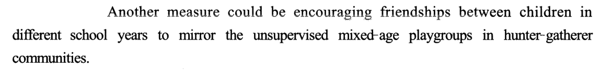
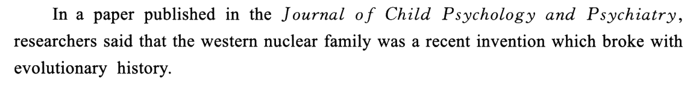
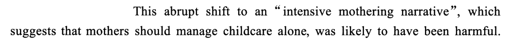
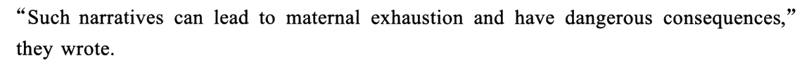
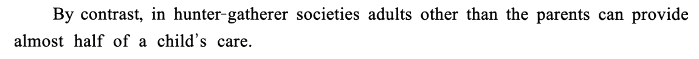
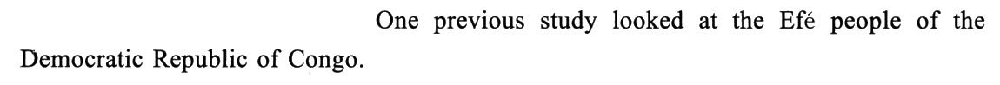
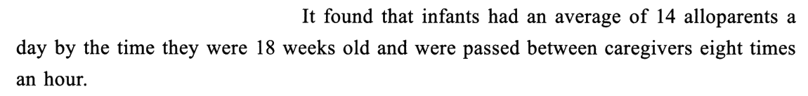
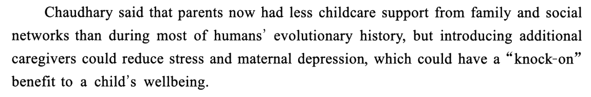
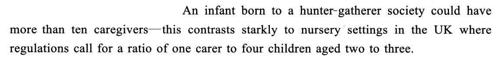
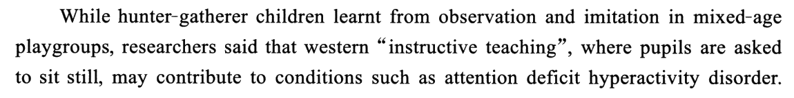
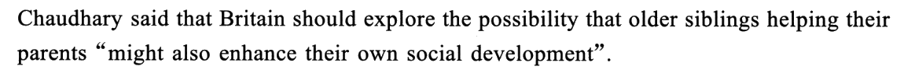
02题目与解析（点选项即判 · 再看解析）
概念细节26. According to the first two paragraphs, alloparenting refers to the practice of ______.
干扰项：B 的 specific（指定的）是凭空加的——原文是许多人轮着照顾（⑤❸ 每小时传递 8 次），恰恰没有「专人负责」。C 把①❶ 的 Parenting tips 和①❸ 的 children … younger ones 拼在一起，编成「教大孩子育儿技巧」——原文是大孩子动手帮忙，不是被教技巧。D 取①❸ 的背娃，却加了个 by their parents——背娃只是一种做法，撑不起「异亲养育」这个总称；更要命的是，alloparenting 的意思恰恰是父母以外的人来带。
技巧：① 先拆词：allo- 是希腊语「别的、他者」（allergy 过敏 ＝ 别样的反应），allo-parenting ＝「别人来当父母」——D 当场出局；② 再找回指：抽象概念多半由前文的具体现象引出，these / such / this practice 往回指的那几句就是答案的原料。
📕 与书解析的商榷：无分歧。书的「技巧总结」讲的正是第②条（these practices 与 alloparenting 同指）；补一句第①条——构词本身就把 D 排掉了，考场上比回读还快。
例子作用27. The scheme in Germany is mentioned to illustrate ______.
干扰项：A 抓的是德国方案的表面——养老院＋托儿所，看上去像「老少交流」；可作者把它写进来，是因为老人在帮忙看孩子（像异亲养育），话题是育儿不是代际沟通。C 方向反：老幼结对是新办法，西方传统育儿在④段（核心家庭、母亲独自带娃），而且那是被批评的对象。D 方向也反：❸ akin to、❹ mirror 说的都是相似（照着学），段内没有一个否定词，哪来「差异」；而且 ways of living（生活方式）也把育儿偷换大了。
技巧：例子题只问一件事——这个例子在给哪句话作证？往前找「总」句：本段❶ 的 ways 是复数，后面 one … Another … 两个序数词一出，「总—分」就锁定了。
📕 与书解析的商榷：无分歧。书的「解题捷径」（偏离全文主题的多半是干扰项）在本题很好用：A 代际、C 传统、D 生活方式，三项都没落在「异亲养育值得借鉴」上。
事实细节28. According to Paragraph 4, the “intensive mothering narrative” ______.
干扰项：A 方向反：❷ harmful、❸ maternal exhaustion 说的是它加重母亲的压力，alleviates 是「减轻」。B 用 nuclear family 设坑——「核心」听着像「凝聚力强」，原文只是讲家庭结构（父母＋孩子），全段没有一个字说家庭关系变好，倒是说了 dangerous consequences。C 把❷ mothers should manage childcare alone 读成了「以孩子为中心」——原文说的是谁来带（母亲一个人），不是家庭围着谁转。
技巧：书的分法很好用：四个选项里 A、B、C 都在说「影响」（A、B 正面，C 中性偏负面），只有 D 在说「它本身是什么」；本段描述它的词全是负面（broke with · harmful · dangerous），正面的 A、B 先出局，剩下的看指代链——This / Such 一路回指到❶ 的 broke with。
📕 与书解析的商榷：书说 D 是「对❶ broke with evolutionary history 的同义改写」——严格说❶ 的主语是核心家庭，不是这套叙事；能把它挪到叙事头上，靠的正是❷ 的 This abrupt shift（shift ＝ 离开原来的方向，本身就是 depart 的意思）。书在「技巧总结」后半段讲了同指，这里把两步连起来更稳。
细节推理29. What can be inferred about the nurseries in the UK?
干扰项：A 把 regulations call for 读成了「规定要求、而托儿所没做到」——原文是规定本身就只要求 1:4，作者嫌的是标准低，不是没达标。B 替原文找了个原因（招不到人）——原文只摆出比例低这个事实，为什么低一个字没提，属于过度推断。D 把⑥❶ 多加照料者的好处（减轻母亲抑郁）偷换成托儿所的职责——托儿所该做的是多派人，防抑郁是加人之后的连带效果。
技巧：推理题先找作者的态度，再看选项是不是那个态度的自然延伸：本段的态度藏在 but 后面（加人有好处）和 contrasts starkly（差距大）里——C 是唯一一个「照着这个态度往前走一步」的选项。
⚠️ 盲做时 B、C 排过一下：两项都和「人手」有关，判据是原文说没说——比例低是原文给的事实，招不到人是自己替原文补的原因。
📕 与书解析的商榷：无分歧。书把⑥段概括成「事实（育儿支持不足）vs 理想（增加育儿支持有好处）」，正是 C 的推理链。🗞 补一个考卷外的事实：2023 年 9 月英格兰把两岁儿童的比例放宽到 1:5——现实政策走的方向和 C 正相反，这也是为什么原文要用 contrasts starkly 这么重的词。
文章标题30. Which of the following would be the best title for the text?
干扰项：A 的 Instructive teaching 只在⑦❶ 出现一次，撑不起全文；anxious parents 是从②段拼来的，而原文说训导式教学的坏处落在孩子（多动症）身上，没说让家长两难。C 的混龄玩耍小组只是③❹、⑦❶ 提到的一项做法，属于细节；lonely（孤独的）原文一个字没有。D 用 Africa、Germany、UK 这些地名拼出一条「从非洲到欧洲」的历史线——文章不是在讲育儿史怎么演变，而是拿进化史作镜子批评西方的现状。
技巧：标题题三步：① 首段中心句（本篇在①❶）② 末段收束（⑦❷ 英国应探索）③ 选项要两头都盖住——B 的前半盖住「孩子和父母更快乐」，后半盖住「向谁学」；A、C 只盖住一段，D 盖错了方向。
📕 与书解析的商榷：无分歧。书指出 D「由全文高频词与碎片信息杂糅捏造」，并点明文章是「以史为鉴」——这正是 D 的硬伤。
03长难句精析（正文蓝色虚线句）
- 主干：
Parenting tips … may be the key to …, researchers have suggested——新闻稿的标准开头：先说结论，消息来源放句末。researchers have suggested 其实是主句（研究者提出），前面一整句是它的宾语，倒装到前面突出内容。 - 主语
Parenting tips后挂过去分词短语obtained from hunter-gatherers in Africa作后置定语（「从……那里得来的」）。 the key to bringing up：to 是介词，后接 doing；bring up＝养育。may be：留有余地的推测——全文的口气都是 may / could / likely，作者从不说死，这是研究类新闻稿的特点。
- and 连接两个并列分句：前句
Kung children as young as four will help to look after younger ones；后句主干“baby-wearing” … is considered the norm。 as young as four作后置定语修饰 children，强调「才四岁」；will表示习惯性的倾向（「总会、往往会」），不是将来时。- 后句主语 baby-wearing 后跟
in which引导的非限制性定语从句，解释这个新造词——infants are carried in slings；谓语is considered the norm：被看作常态（consider sb/sth + 名词 的被动）。 - 本句两个做法都是 26 题的原料：前一半（孩子帮带孩子）支撑 A 的 sharing，后一半（背娃）被 D 拿去加上了 by their parents。
- 主干：
these practices … could lead to less anxiety——句首According to Dr Nikhil Chaudhary交代出处，后接同位语an evolutionary anthropologist at Cambridge University介绍身份。 - 主语 these practices 后的
known as alloparenting是过去分词短语作插入语，给前面的东西命名——一个整段只有一句话的段落，干的就是「下定义」这件事，26 题就考它。 lead to：导致；for children and parents：受益的是两代人——30B 用 family 不用 children 的依据。
- 主干：
Another measure could be encouraging friendships——主系表，表语是动名词短语（「措施可以是鼓励……」），不是进行时。 between children in different school years：介词短语修饰 friendships；school years 指年级，不是「学生时代」。to mirror开头的部分是不定式作目的状语：为了仿照……；mirror 作动词＝像镜子一样照着做。宾语里unsupervised（没人看管的）和mixed-age（混龄的）两个前置定语叠在 playgroups 前。- Another 呼应❷ 的 one scheme——两个办法都在给❶ 的 ways 作例子（27 题）；而 mirror 和❸ 的 akin to 都表示「相似」，正好排掉 27D 的 differences。
- 主干：
This abrupt shift … was likely to have been harmful——主语和谓语之间隔着一个 which 从句，读的时候先把它跳过去。 shift to后的宾语是加引号的术语「密集母职叙事」，其后which suggests that引出非限制性定语从句，解释这套说法的内容：mothers should manage childcare alone（suggest 后的 that 从句里 should 表「应该」）。be likely to have been：对过去的推测（「很可能已经」），和 be likely to be（对现在／将来）区分开。- This abrupt shift 是本句的关节：This 回指❶ 整件事（核心家庭打破进化史），shift 本身就有「偏离原方向」的意思——28D departs from 就从这里来。
- 主干：
It found that …——It 回指❷ 的 previous study，that 引导宾语从句。 - 宾语从句里一个主语 infants 带两个并列谓语：①
had an average of 14 alloparents a day；②were passed between caregivers eight times an hour（被动：被传来传去）。中间夹着时间状语从句by the time they were 18 weeks old。 by the time：「到……的时候」，主句常配完成时；这里用一般过去时 had，是在报告研究结果。a day/an hour：不定冠词作「每」（per）讲。- 两组数字（14 个人／每小时 8 次）是给⑤❶ 的 almost half 补证据——这一段没出题，却是 29 题「人越多越好」的数据底。
- 主干：
Chaudhary said that A, but B——said 后的宾语从句由 but 连成两半，重心在 but 之后。 - 前半 A：
parents now had less childcare support …后接比较对象than during most of humans’ evolutionary history——比较的是两个时期（现在 vs 进化史上大部分时候），所以 than 后直接跟 during 短语。宾语从句里 had 是间接引语的时态后移，意思仍是「现在」。 - 后半 B：主语是动名词短语
introducing additional caregivers，谓语could reduce stress and maternal depression；再挂一个which非限制性定语从句，which 指代前面「减轻压力和抑郁」这整件事：could have a “knock-on” benefit。 - 一句话就是一条因果链：加人 → 父母压力和抑郁减轻 → 孩子连带受益。29 题 C 的「应提高比例」就从 introducing additional caregivers 推出来。
- 破折号前后是两个分句：前句
An infant born to a hunter-gatherer society could have more than ten caregivers（born to 作后置定语：出生在……的）；后句this contrasts starkly to nursery settings in the UK，this 回指前句整件事。 where引导定语从句修饰 nursery settings：regulations call for a ratio of one carer to four children；最后aged two to three是后置定语修饰 children（「两到三岁的」，aged 读 /eɪdʒd/）。a ratio of A to B＝A 比 B。两组数字并排：十几个人看一个 vs 一个人看四个——作者不加评论，只用 contrasts starkly 让读者自己得出结论，这就是 29 题为什么是推理题。
- 主干：
researchers said that …——句首While引导的是对比状语从句（「……，而……」），不是时间。 - While 从句：
hunter-gatherer children learnt from observation and imitation，地点状语in mixed-age playgroups。 - said 后的宾语从句：主语
western “instructive teaching”后跟where引导的非限制性定语从句（pupils are asked to sit still），谓语may contribute to conditions，再用such as举例：注意力缺陷多动障碍。contribute to 这里是「助长（坏事）」。 - 对比的两头：看＋学、混龄、自由 vs 讲＋听、坐着不动。30A 拿后一头做标题，可它只占这一句。
04词汇复盘（点卡片看详情）
05可搬进作文/翻译的素材
本篇话题——育儿、家庭支持、老幼互助、教育方式——正对大作文里的「家庭教育」「代际关系」「独生子女／二孩」「压力与心理健康」类题目，也能给小作文写「社区志愿活动通知」「给托育机构提建议」垫素材。英文例句都是按原文句式自拟的，只借骨架。